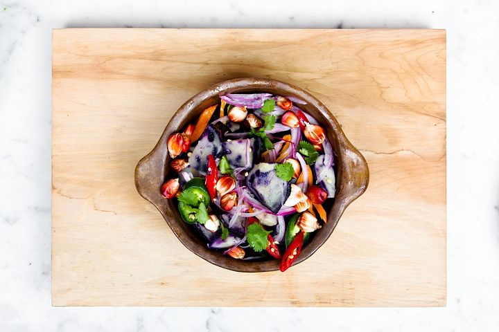

Ouvert en continu,
lundi à vendredi,
de 7h30 à 14h30
Aujourd’hui rencontrez nos amis de la ruche qui dit oui pour découvrir des produits du terroir en direct du producteur
Cuisine, plaisir, bien-être, environnement... Et si von vous propopsait de retrouver tout ca dans un seul et même lieu, au cœur de Bordeaux, avec une terrasse et une belle vue sur la Garonne ?Venez découvrir un concept de restauration rapide, bio, éthique, local et éco-responsable....
Bienvenue chez nous, au Food du Goût !
Découvrez notre histoireLa gastronomie est l'art d'utiliser la nourriture pour créer le bonheur
Theodore Zeldin

Sinon, on vous sert quoi ce midi ?


Food du Goût

Food du Goût